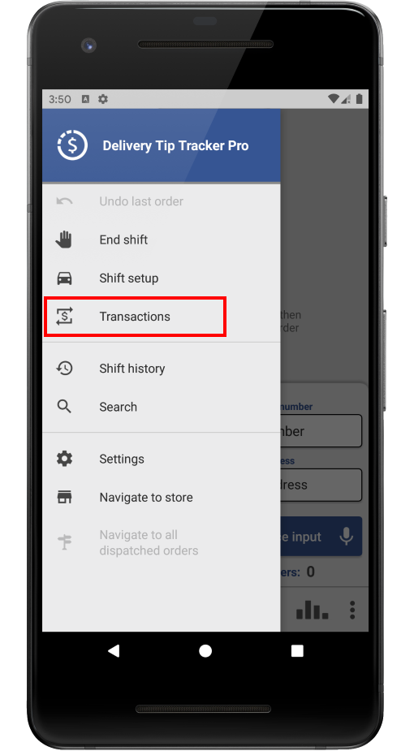
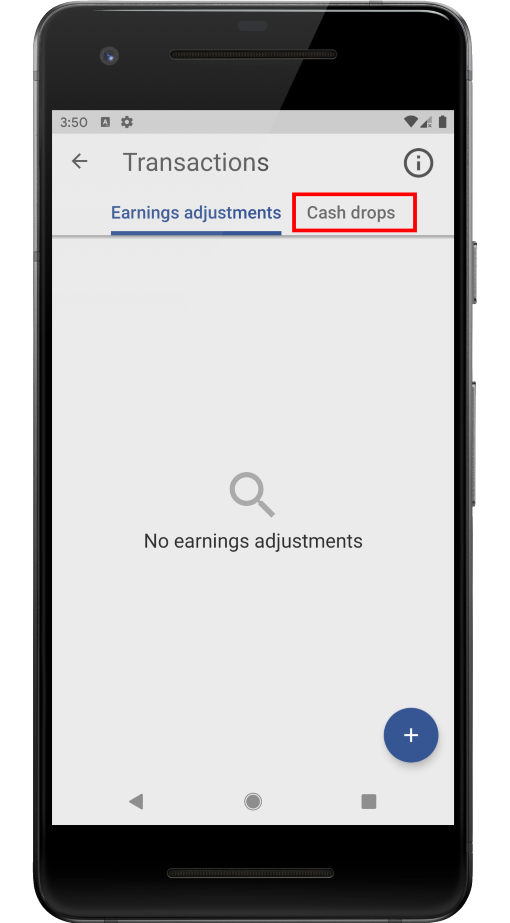
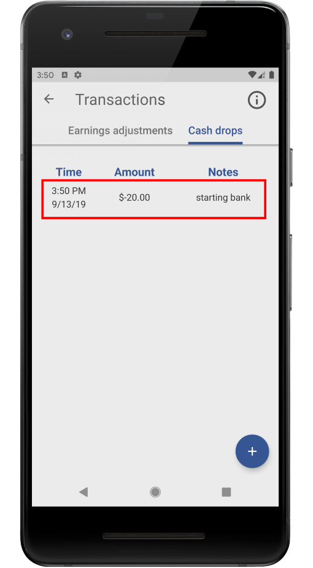

A starting bank is money the store lends you at the beginning of your shift for the purposes of making change.
Your starting bank will be listed in the "Cash drops" section of the "Transactions" screen. To view it, follow the steps outlined in red below:
  Notice that the starting bank is a negative number, since this is money you owe back to the store at the end of your shift. If you need to make more cash drops, you can do so from this screen.